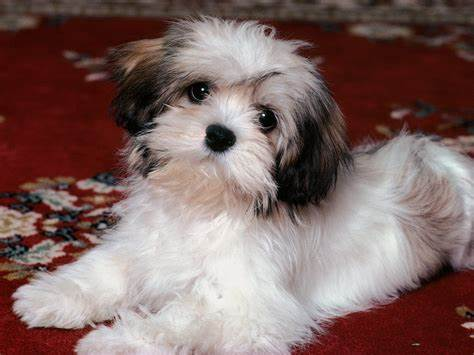

Amazing Dog Facts!
These fun facts about dogs will make you feel all fuzzy inside.
- All dogs can be traced back 40 million years ago to a weasel-like animal called the Miacis
which dwelled
intrees and dens. The Miacis later evolved into the Tomarctus, a direct forbear of the genus Canis,
which includes the wolf and jackal as well as the dog.